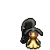
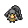

Pokédex / #303

Mawile #303
SteelFairy
Mawile's huge jaws are actually steel horns that have been transformed. Its docile-looking face serves to lull its foe into letting down its guard. When the foe least expects it, Mawile chomps it with its gaping jaws.
Generation 3 · Hoenn

Stats
| Attack | 85 | |
|---|---|---|
| Defense | 85 | |
| Sp. Atk | 55 | |
| Sp. Def | 55 |
In the wild
| Wild level | 40–50 |
|---|---|
| HP | 50 |
| Experience | 10 |
| Egg groups | Fairy, Field |
Evolution
- Does not evolve.
Moves
| Level | Move | Type | Category | Power | Energy | Cooldown | Effect | |
|---|---|---|---|---|---|---|---|---|
| 1 | Tackle | Normal | Physical | 15 | 15 | 1s | Tackle is one of the most common and basic moves a Pokemon learns. It deals damage with no additional effects. | |
| 5 | Vice Grip | Normal | Physical | 55 | 55 | 9s | Vice Grip inflicts damage and has no secondary effect. | |
| 10 | Bite | Dark | Physical | 60 | 60 | 9s | Bite deals damage and has a 30% chance of causing the target to flinch. | |
| 15 | Fairy Wind | Fairy | Special | 40 | 50 | 9s | The user stirs up a fairy wind and strikes the target with it. | |
| 20 | Astonish | Ghost | Physical | 30 | 30 | 5s | The user attacks the target while shouting in a startling fashion. This may also make the target flinch. | |
| 25 | Play Rough | Fairy | Physical | 90 | 90 | 15s | The user plays rough with the target and attacks it. This may also lower the target's Attack stat. | |
| 30 | Crunch | Dark | Physical | 80 | 80 | 12s | Crunch deals damage and has a 20% chance of lowering the target's Defense by one stage. | |
| 35 | Iron Head | Steel | Physical | 80 | 80 | 12s | Iron Head inflicts damage and has a 30% chance of causing the target to flinch. | |
| 40 | Iron Defense | Steel | Status | – | 90 | 60s | Iron Defense raises the user's Defense stat by two stages. | |
| 45 | Dark Pulse | Dark | Special | 8 | 95 | 18s | Dark Pulse deals damage and has a 20% chance of causing the target to flinch. | |
| 50 | Sucker Punch | Dark | Physical | 80 | 80 | 12s | Sucker Punch deals damage and has no secondary effect. | |
| 55 | Stockpile | Normal | Status | – | 90 | 10s | Raises the user's Defense and Special Defense by one stage and charges up power for use with companion moves Spit Up or Swallow. | |
| 55 | Swallow | Normal | Status | – | 90 | 120s | Swallow recovers a varying amount of HP depending on how many times the user has used Stockpile. It recovers 25%, 50% or 100% of the user's maximum HP if the user stockpiled one, two or three times respectively. | |
| 55 | Spit Up | Normal | Special | 100 | 150 | 30s | Spit Up deals varying damage depending on how many times the user used Stockpile. The base power is 100, 200 or 300 if the user stockpiled one, two or three times respectively. | |
| 60 | Fake Tears | Dark | Status | – | 90 | 60s | Fake Tears lowers the target's Special Defense stat by two stages. |
Field abilities
StrengthRock Smash
Special abilities
Hyper CutterIntimidate
Egg moves
Ancient PowerFire FangIce FangMetal BurstMisty TerrainPoison FangPunishmentSeismic TossSlamThunder Fang
Technical machines
Brick BreakDouble TeamFire BlastFlamethrowerFocus PunchHyper BeamIce BeamProtectRain DanceRestRock SlideRock TombSandstormShadow BallSludge BombSolar BeamSubstituteSwords DanceTauntToxic
Drops
| Item | Amount | Chance | |
|---|---|---|---|
| magnet | 1 | 33.3% | |
| piece of royal steel | 1 | 25% | |
| stone orb | 1 | 20% | |
| metal spike | 1 | 19.2% | |
| huge chunk of crude iron | 1 | 14.3% | |
| black diamond | 1 | 8.33% | |
| grey-blue powder | 1 | 6.25% | |
 | mawile doll | 1 | 0.1% |
| Pixie Plate | 1 | 0.025% | |
| Iron Plate | 1 | 0.025% | |
| held metal coat | 1 | 0.01% | |
| held pink bow | 1 | 0.01% |